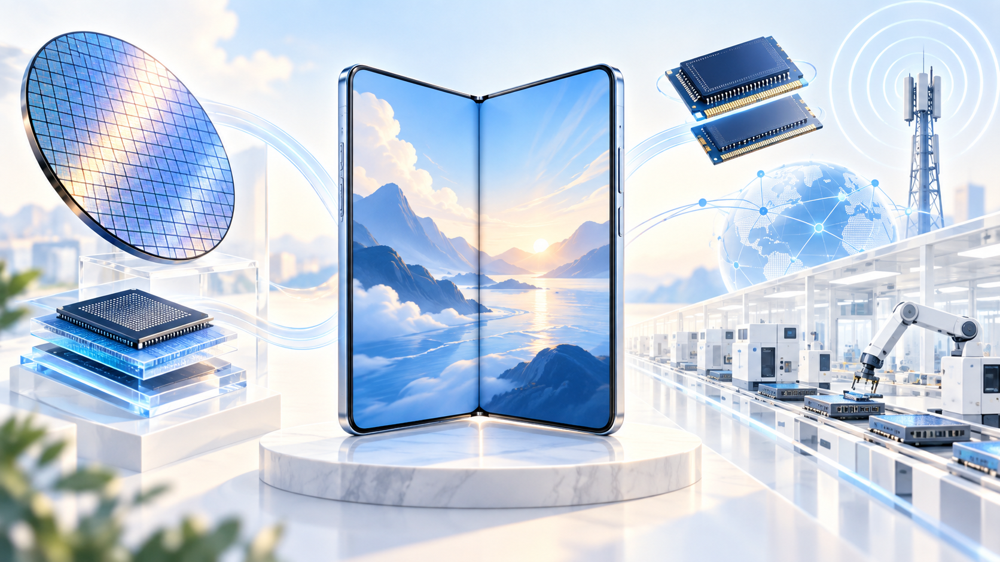
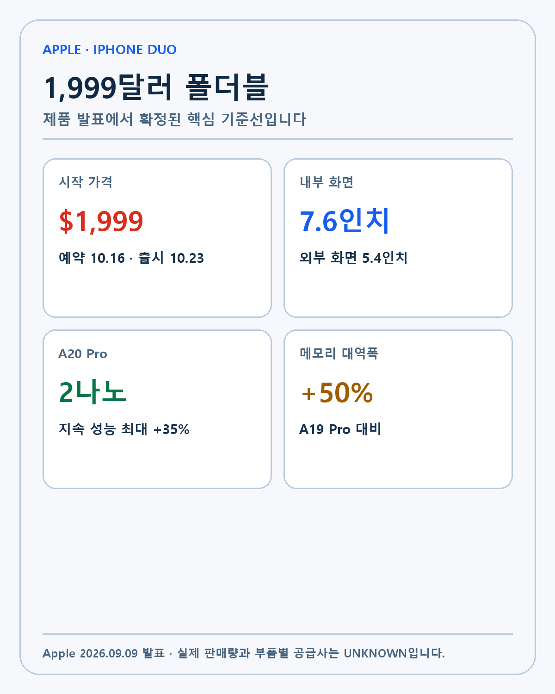
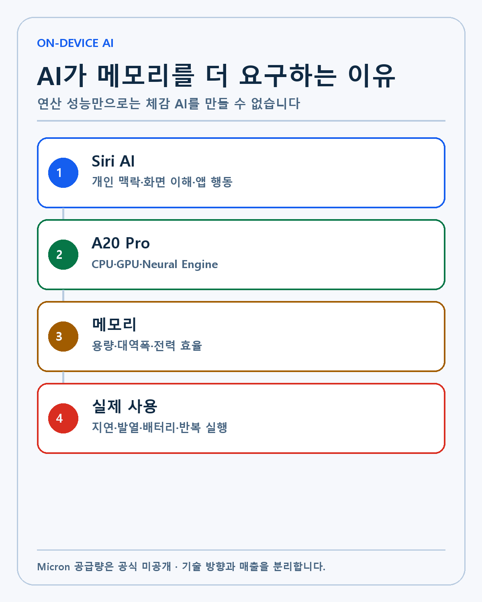
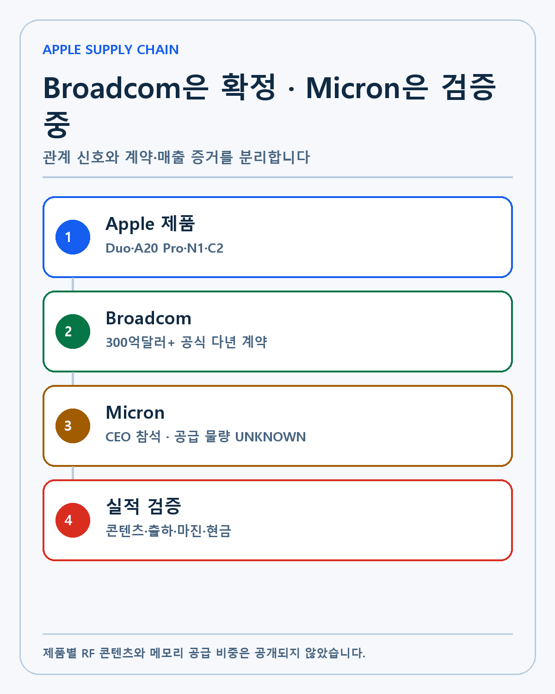
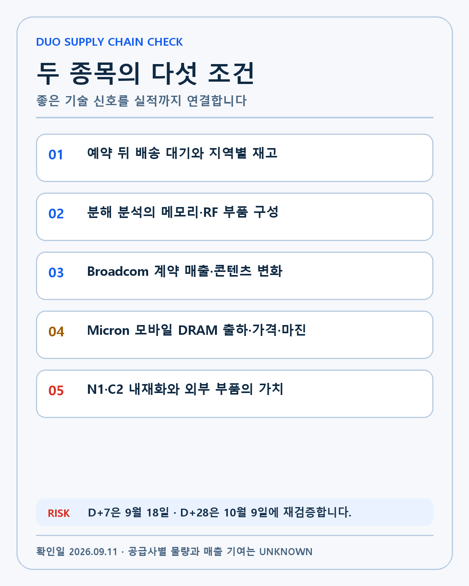

APPLE SUPPLY CHAIN · DEEP RESEARCH
Apple iPhone Duo 공급망 분석: 1999달러 폴더블과 Broadcom·Micron의 실제 기회
Apple의 1,999달러 첫 폴더블과 A20 Pro·온디바이스 AI를 Broadcom 공식 계약과 Micron의 미확정 공급 경계로 분석합니다.

Apple이 2026년 9월 9일 첫 폴더블 iPhone인 iPhone Duo를 발표했습니다. 미국 가격은 1,999달러부터 시작하고, 예약은 10월 16일, 출시는 10월 23일입니다. 7.6인치 내부 화면, 5.4인치 외부 화면, A20 Pro와 Apple Intelligence, 새로운 Siri AI가 핵심입니다.
제품 발표는 소비자 관점에서 폴더블 디자인의 이야기입니다. 반도체 투자자에게는 다른 질문이 생깁니다. 두 화면과 온디바이스 AI가 연산·메모리·무선 연결 부품의 가치를 얼마나 높이는가, Apple의 자체 칩 N1과 C2가 외부 공급사의 역할을 어디까지 바꾸는가, 1,999달러 제품이 실제 판매량과 공급망 매출로 이어지는가입니다.
이 글은 iPhone Duo를 Broadcom과 Micron의 즉각적인 수주 호재로 단정하지 않습니다. Broadcom은 Apple과의 300억달러 초과 다년 계약이 공식 확인됩니다. Micron CEO의 행사 참석은 Reuters가 보도했지만 iPhone Duo의 메모리 공급량과 매출 기여는 공개되지 않았습니다. 확인된 사실, 합리적인 해석, UNKNOWN을 분리합니다.
제품 발표에서 확인된 기준선
| 항목 | 확인된 내용 | 아직 모르는 것 |
|---|---|---|
| 가격 | 미국 1,999달러부터 | 지역별 실구매가·판매량 |
| 화면 | 내부 7.6인치, 외부 5.4인치 | 초기 수율·교체 비용 |
| 프로세서 | 2나노 A20 Pro | 실제 전력·발열·수율 |
| 메모리 | 통합 대역폭 50% 증가 | 용량·공급사·단가 |
| 무선 | Apple N1·C2 | 외부 RF 부품별 콘텐츠 |
| 일정 | 10월 16일 예약, 23일 출시 | 초기 공급량·배송 대기 |

Apple의 공식 발표에서 내부 화면은 iPhone 18 Pro Max보다 50% 크고, 외부 화면은 iPhone 18 Pro 화면 면적의 90%라고 설명합니다. 두 화면은 같은 화면비를 쓰며 내부 화면은 최대 3000니트 밝기와 ProMotion을 지원합니다.
iPhone Duo는 100개가 넘는 부품으로 구성된 힌지, 티타늄 몸체와 3D 프린팅 힌지 커버, 내부·외부 화면을 동시에 처리하는 디스플레이 엔진을 사용합니다. 배터리는 양쪽에 하나씩 나뉘고 맞춤형 베이퍼 챔버가 A20 Pro의 열을 처리합니다. 폴더블 제품의 가치는 얇은 외형 하나가 아니라 기계 구조와 반도체, 열관리, 소프트웨어가 함께 작동하는지에 달렸습니다.
1999달러가 만드는 수요 시험
iPhone Duo의 시작 가격은 iPhone 18 Pro의 1,199달러보다 800달러 높습니다. 저장용량은 256GB부터 2TB까지 제공됩니다. Apple은 월 83.29달러의 24개월 할부도 제시했습니다.
높은 가격은 매출 단가에는 유리하지만 시장 규모를 제한할 수 있습니다. 초기 구매자는 폴더블을 기다린 충성 고객과 기술 애호가, 업무용 멀티태스킹 수요에 집중될 가능성이 큽니다. 일반 iPhone 구매자에게 1,999달러는 교체 주기를 미룰 만한 가격입니다.
공급량도 따로 봐야 합니다. 예약 직후 배송 대기기간이 길어져도 수요 폭발과 생산 부족을 구분하기 어렵습니다. 초기 재고가 작으면 적은 주문으로도 품절처럼 보일 수 있습니다. 공급망 투자자는 판매 속도, 생산량과 수율을 함께 확인해야 합니다.
매출총이익률은 더 복잡합니다. 고가 제품은 절대 마진을 높일 수 있지만 폴더블 패널과 정밀 힌지, 두 배터리와 냉각 시스템, 새로운 조립 공정이 원가를 끌어올립니다. 출시 초기 불량과 A/S 비용도 변수입니다. 1,999달러라는 가격만으로 Apple과 부품사의 이익 증가를 계산하지 않겠습니다.
A20 Pro는 온디바이스 AI의 병목을 보여줍니다
Apple은 A20 Pro가 최신 2나노 공정으로 만들어졌다고 밝혔습니다. 6코어 CPU는 A19 Pro보다 최대 20%, 7코어 GPU는 최대 40% 빠르며, 새로운 Dual 16-core Neural Engine은 온디바이스 AI 모델용 연산 성능을 2배로 높였다고 설명합니다. 통합 메모리 대역폭도 50% 늘었습니다.
이 수치는 Apple의 자체 시험과 비교 기준입니다. 출시 뒤 독립 벤치마크에서 실제 성능과 소비전력, 발열 지속성을 확인해야 합니다. 다만 Apple이 어떤 병목을 해결하려는지는 분명합니다. 온디바이스 AI는 단순한 CPU 속도보다 대량의 데이터를 빠르게 읽고 쓰는 메모리 대역폭, 발열을 제어하는 냉각과 배터리 효율을 함께 요구합니다.

Siri AI는 메시지와 이메일, 사진 같은 개인 맥락과 화면 내용을 이용합니다. 사용자가 보고 있는 정보를 이해하고 앱에서 행동하며, 필요한 경우 웹의 최신 정보를 가져옵니다. 사진 편집과 생성 기능도 확대됩니다. 이 기능이 실제 사용으로 이어지면 스마트폰의 AI 워크로드가 일회성 데모에서 일상적인 추론으로 바뀝니다.
메모리 관점에서는 모델과 개인 데이터, 여러 앱을 동시에 처리할 공간과 대역폭이 중요합니다. 더 큰 화면에서 두 앱을 나란히 쓰고 Siri AI를 동시에 실행하면 메모리 요구가 커질 수 있습니다. 그러나 Apple은 iPhone Duo의 DRAM 용량, NAND 구성과 공급사를 공개하지 않았습니다. 대역폭 증가가 특정 공급사의 매출 증가로 바로 연결되지는 않습니다.
Micron에 대한 확인과 추론의 경계
Reuters의 현장 보도는 Micron CEO Sanjay Mehrotra가 iPhone Duo 출시 행사에 참석했다고 전했습니다. Apple이 공급업체를 행사에서 크게 드러내지 않는다는 점 때문에 참석 자체가 눈에 띈다는 설명입니다.
이것은 관계의 신호일 수 있습니다. AI 기능이 스마트폰 메모리의 성능과 용량을 끌어올리면 Apple과 메모리 업체의 협력 중요성이 커집니다. 글로벌 메모리 공급이 빠듯한 환경에서는 안정적인 물량 확보도 제품 출시의 조건이 됩니다.
하지만 참석은 공급 계약 공시가 아닙니다. Apple은 Micron의 탑재 비중과 단가, 계약기간을 공개하지 않았습니다. Micron도 iPhone Duo 한 모델의 매출을 따로 제시하지 않았습니다. 행사 참석만 보고 공급량과 이익을 추정하는 것은 증거 범위를 넘습니다.
Micron 투자에서 확인할 지표는 모바일 DRAM 출하량, 비트 성장, 평균판매가격, 총마진과 고객 재고입니다. iPhone Duo의 분해 분석에서 부품사가 확인되더라도 한 기기의 공급사 표본에 불과합니다. 여러 생산 로트와 지역 모델, 다른 iPhone까지 확인해야 실제 점유율을 판단할 수 있습니다.
AI 서버와 스마트폰 메모리의 연결
AI 시대의 메모리 수요는 HBM만으로 끝나지 않습니다. 데이터센터에는 HBM과 서버 DRAM, SSD용 NAND가 필요하고, AI 기능을 기기에서 실행하려면 모바일 DRAM과 저장공간도 늘어날 수 있습니다. 같은 공급사가 서로 다른 시장의 웨이퍼를 배분하면서 가격과 수익성에 영향을 줍니다.
스마트폰 AI의 확산은 메모리 수요 기반을 넓히는 장점이 있습니다. 데이터센터 CAPEX가 흔들려도 단말 AI가 성장하면 수요원이 분산됩니다. 반대로 HBM의 높은 수익성 때문에 생산능력이 서버용에 우선 배정되면 모바일 메모리 가격이 오르고 고객이 용량을 조정할 수 있습니다.
Micron을 대형 기술 복리주로 보는 제 판단에는 이 산업 연결이 중요합니다. HBM의 기술 경쟁력뿐 아니라 모바일과 데이터센터, 자동차와 엣지 AI가 함께 요구하는 메모리 구조를 봅니다. iPhone Duo는 그 연결을 보여주는 제품이지만 투자 결론은 분기 실적과 현금흐름으로 검증해야 합니다.
Broadcom의 Apple 관계는 공식 계약입니다
Apple은 2026년 7월 Broadcom과 새로운 다년 계약을 발표했습니다. 계약 규모는 300억달러를 넘을 것으로 예상되고, 150억개 이상의 미국산 칩 생산을 포함합니다. 콜로라도 포트콜린스 시설 현대화에 Broadcom이 15억달러를 투자하도록 지원합니다.
Apple의 2026년 Broadcom 발표는 Broadcom이 FBAR 필터를 포함한 고급 RF 부품과 무선 연결 기술을 생산한다고 명시합니다. Broadcom이 SEC에 제출한 8-K도 Apple 제품용 고성능 RF와 무선 부품·모듈을 공급하고 필요한 생산능력을 배정하는 계약을 확인합니다.

Broadcom과 Apple의 관계가 추측이 아니라는 점은 강점입니다. 계약 기간과 생산투자는 장기 공급을 전제로 합니다. Apple의 판매량이 늘고 한 기기당 RF 복잡도가 높아지면 Broadcom의 부품 수요에 긍정적일 수 있습니다.
그러나 300억달러는 Apple이 예상한 계약 총규모입니다. 특정 분기 매출, iPhone Duo 한 대당 콘텐츠와 Broadcom의 영업이익을 의미하지 않습니다. Apple의 발주 시점, 생산 수율, 제품 믹스와 계약 가격에 따라 매출 인식이 달라집니다.
N1과 C2는 Broadcom에 위협인가
iPhone Duo에는 Apple이 설계한 N1 무선 네트워킹 칩이 들어갑니다. Wi-Fi 7, Bluetooth 6와 Thread를 지원합니다. C2는 Apple의 차세대 셀룰러 모뎀으로 연결 품질과 안정성을 AI로 개선하고 미국에서 mmWave를 지원합니다.
자체 칩이 늘어났다는 이유만으로 Broadcom이 모든 무선 부품에서 밀려났다고 결론 내릴 수는 없습니다. 모뎀과 Wi-Fi 칩, RF 필터와 프런트엔드 모듈은 서로 다른 기능을 맡습니다. Apple이 같은 해 Broadcom과 대규모 RF·연결 부품 계약을 확대한 사실은 외부 공급 역할이 계속된다는 근거입니다.
다만 장기 위험은 분명합니다. Apple이 칩 설계 범위를 넓히면 외부 공급사가 맡는 기능이 바뀔 수 있습니다. Broadcom은 단순 부품 공급보다 고성능 RF와 맞춤형 연결 기술에서 대체하기 어려운 가치를 보여줘야 합니다. 투자자는 공식 계약 금액만 보지 말고 고객 집중도와 제품별 콘텐츠, 총마진을 함께 봐야 합니다.
Apple의 AI 전략은 클라우드와 기기를 함께 씁니다
iPhone Duo는 Apple Intelligence를 온디바이스 처리와 Private Cloud Compute로 운영합니다. 개인 정보에 민감한 작업은 기기에서 처리하고 더 큰 모델이 필요하면 Apple의 클라우드 인프라를 활용합니다. Axios의 행사 분석은 Apple이 상시 녹음 장치와 다른 프라이버시 중심의 AI 경험을 강조했다고 평가했습니다.
이 구조는 반도체 수요를 양쪽에서 만듭니다. 기기에는 A20 Pro와 메모리, 무선 연결 부품이 필요하고 클라우드에는 서버와 네트워크, 전력 인프라가 필요합니다. Broadcom은 무선 부품뿐 아니라 AI 네트워크와 맞춤형 가속기 생태계에도 노출돼 있습니다. Micron은 모바일 메모리와 데이터센터 메모리 양쪽을 공급할 수 있습니다.
그렇다고 Apple의 AI 사용량이 각 회사 매출로 어느 정도 이어지는지는 아직 알 수 없습니다. Private Cloud Compute의 서버 구성, 네트워크 장비 공급사와 메모리 용량은 공개 범위가 제한적입니다. 산업 연결은 가설이고 계약과 실적이 검증 자료입니다.
다섯 단계 검증표
- 수요: 10월 16일 예약 뒤 배송 대기기간과 취소율, 지역별 공급을 확인합니다.
- 제품: 출시 후 분해 분석에서 메모리 용량·공급사와 RF 부품 구성을 봅니다.
- Broadcom: Apple 계약 매출 인식, RF 콘텐츠와 고객 집중도를 분기 자료에서 확인합니다.
- Micron: 모바일 DRAM 비트 출하·가격·총마진과 고객 재고를 봅니다.
- 내재화: N1·C2 세대가 바뀔 때 외부 공급사의 기능과 단가가 어떻게 변하는지 추적합니다.

다음 확인일은 9월 18일과 10월 9일입니다. D+7에는 독립 성능 자료와 공급망 보도를 업데이트합니다. D+28에는 예약 시작을 앞둔 생산량과 메모리·RF 부품 정보를 다시 확인합니다. 출시 후에는 판매량과 Apple·Broadcom·Micron 실적 설명으로 가설을 검증합니다.
시나리오별 투자 해석
강세 시나리오는 iPhone Duo의 초기 수요가 생산능력을 넘고, 높은 메모리 대역폭과 Siri AI가 일반 iPhone으로 빠르게 확산되는 경우입니다. Broadcom의 RF 콘텐츠가 유지되거나 늘고 Micron의 모바일 DRAM 출하와 가격도 좋아져야 합니다.
기준 시나리오는 Duo가 고가 틈새 제품에 머물지만 A20 Pro와 AI 기능이 다른 제품으로 퍼지는 경우입니다. 한 모델 판매량은 제한적이어도 Apple 생태계의 메모리와 연결 부품 요구는 점진적으로 높아질 수 있습니다.
약세 시나리오는 높은 가격과 품질 문제로 수요가 약하고 생산 수율이 낮은 경우입니다. Apple의 자체 칩 범위가 예상보다 빨리 넓어져 Broadcom의 외부 부품 가치가 줄거나, 메모리 가격 부담 때문에 제품 용량과 Micron 공급 효과가 제한될 수도 있습니다.
제 투자 판단
저는 미래에 필요한 기술을 만들고, 그 기술을 현금흐름으로 연결할 수 있는 기업을 선호합니다. 판단 순서는 기술, 해자, 창업자와 경영진, 성장률, 현금흐름입니다. Broadcom은 AI 네트워크·맞춤형 반도체·무선 연결을 함께 갖고 있고, Micron은 HBM·데이터센터·모바일 메모리 수요가 만나는 기업입니다.
iPhone Duo는 두 회사에 의미 있는 기술 신호를 줍니다. 온디바이스 AI가 메모리 대역폭과 연결 품질을 더 요구한다는 사실, Apple과 Broadcom의 큰 계약이 유지된다는 사실은 긍정적입니다. Micron CEO의 참석도 관계의 중요성을 보여주는 보조 신호입니다.
여기서 멈추지 않겠습니다. Broadcom은 계약의 실제 매출과 제품별 콘텐츠, Micron은 공급 비중과 모바일 메모리 실적이 확인돼야 합니다. 기술 방향은 장기 보유의 이유가 될 수 있지만 가격과 실적, 현금흐름은 그 판단을 계속 검증합니다.
이 글은 개인 투자 기록이며 특정 종목의 매수·매도를 권유하지 않습니다. 제품 성능 수치는 Apple의 자체 시험 기준이며 실제 사용 결과는 다를 수 있습니다. 공급사별 물량과 매출 기여가 공개되지 않은 부분은 UNKNOWN입니다. 모든 투자 판단과 책임은 투자자 본인에게 있습니다.
작성 방법
2026년 9월 11일 기준 공식 자료와 공시를 우선하고 실제·회사 전망·시나리오·UNKNOWN을 분리했습니다.
개인 투자 기록이며 특정 종목의 매수·매도를 권유하지 않습니다.